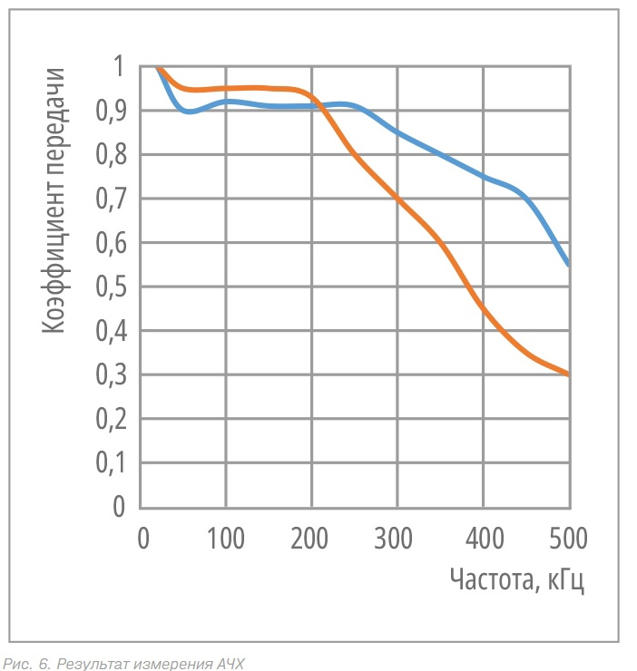

В статье рассматриваются методы реализации однопроводных каналов передачи данных по силовым электросетям в жилых зданиях, загородных и промышленных помещениях. В качестве информационного провода предлагается использовать проводник «нейтраль» электропроводки.
Введение
PLC (Power Line Communication) – коммуникационная сеть, транспортом которой является обычная электропроводка квартиры, офиса или предприятия. Каналы PLC можно использовать для передачи данных и голоса, но основная ниша использования данной технологии, по мнению автора, – построение низкоскоростных сетей АСКУЭ, систем промышленной телеметрии и систем домашней автоматизации, так называемый «Умный дом» (IoT-устройства).
Организация протоколов обмена данными посредством PLC при построении подобных систем и сетей выгодно отличается от традиционных проводных и беспроводных способов, таких как RS-485, CAN, GSM, ZigBee, тем, что не требует дополнительных финан-сово-временны́х затрат как на прокладку линий связи, так и на содержание оборудования сетей.
Методы организации каналов телеметрии по электросети
В настоящее время в России наиболее распространены следующие виды организации электроснабжения в городских условиях и сельской (загородной) местности: TN-S, TN-C-S, TT. Данные виды отличаются конфигурацией систем заземления.
Основным документом, регламентирующим использование различных систем заземления в России, является ПУЭ, разработанный в соответствии с принципами, классификацией и способами устройства заземляющих систем, утверждённых специальным протоколом Международной электротехнической комиссии (МЭК). Сокращённые названия систем заземления принято обозначать сочетанием первых букв французских слов: «Terre» – земля, «Neuter» – нейтраль, «Isole» – изолировать, а также английских: «combi-ned» и «separated» – комбинированный и раздельный.
- T – заземление.
- N – подключение к нейтрали.
- I – изолирование.
- C – объединение функций, соединение функционального и защитного нулевых проводов.
- S – раздельное использование во всей сети функционального и защитного нулевых проводов.
Описание метода
Основная идея предлагаемого метода передачи телеметрической информации заключается в следующем: в качестве сигнального проводника используется провод «N» рабочего нуля схемы электропроводки, а в качестве возвратного проводника – труба тепло- или водоснабжения здания, металлический заземлённый пол в производственных помещениях (для схемы TN-C-S) или заземлитель, соединённый с шиной РЕ (для схемы TТ).
Информация передаётся модулированным потоком токовых импульсов, который регистрируется на приёмном конце бесконтактным способом с помощью магнитной рамки или интегрального магнитного сенсора, закреплённых непосредственно или вблизи проводника «N». Приёмная система может располагаться в любом месте по всей длине провода до точки заземления проводника «PEN» или «N».
1 этап – определение АЧХ канала
Частота передающего устройства перестраивалась в диапазоне 50…500 кГц с шагом 10 кГц. В точке регистрации, удалённой от передающего устройства, сигнал фиксировался широкополосной магнитной рамкой, расположенной непосредственно на шине «N».
Для проведения этого исследования передающее устройство было настроено на генерацию последовательности токовых импульсов длительностью 200 мкс, периодом следования 2 мс и частотой заполнения 100 кГц.
В начало статьи